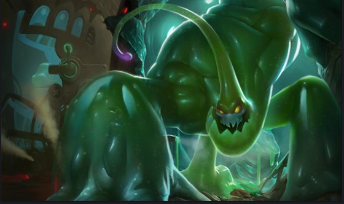

자크 설명서는 리그오브레전드라는 게임에서 탱커 역할인 자크에 대해 설명해준다.
- 세포분열-기본지속효과
- 탄성주먹-Q
- 불안정물질-W
- 새총발사-E
- 바운스!-R
자크

자크는 화학공학 지층을 따라 흐른 독성물질이 자운의 지하동굴 깊은 곳에 위치한 웅덩이에 모여 만들어진 생명체이다. 이처럼 변변치 못한 태생에도 불구하고 자크는 원시적인 진흙의 상태에서 지성을 갖춘 존재로 성장했다. 그는 자운의 배관 속에 살면서 도움이 필요한 이들을 돕거나 자운의 망가진 기반시설을 재건하기 위해 이따금 모습을 드러낸다